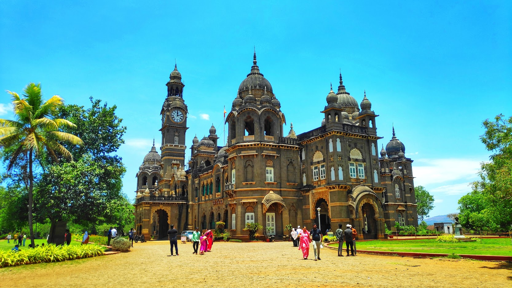
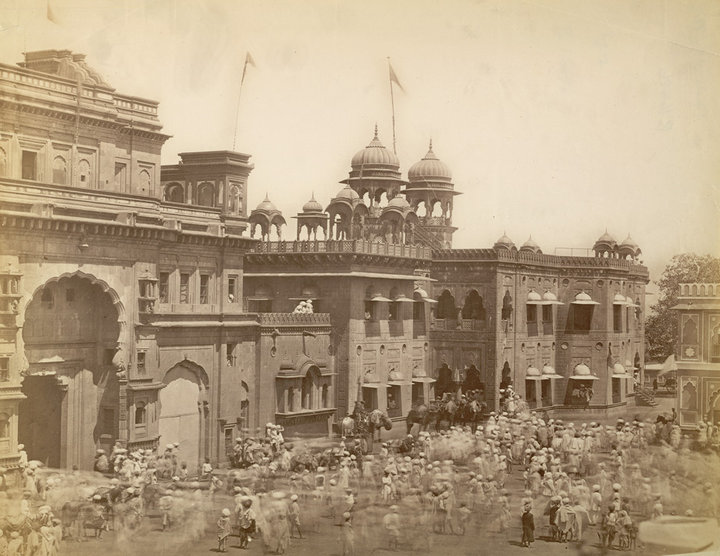
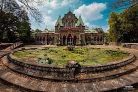

🏛️ Kolhapur Tourist Attractions
New Palace
Old Palace
Town Hall Museum
Mahalaxmi Temple

Rankala Lake

Discover the beauty, history, and culture of our city. Explore hidden gems, taste local food, and learn about the stories that shaped this place.
Kolhapur, known as the Dakshin Kashi (Varanasi of the South), has a glorious history deeply rooted in spirituality and valor. It is home to the Mahalaxmi Temple, one of the Shakti Peethas, attracting devotees for centuries. The city was an important seat of the Maratha Empire, ruled by Chhatrapati Shahu Maharaj, a visionary leader who pioneered social reforms and education. Rich traditions of wrestling (kushti), classical arts, and unique crafts like Kolhapuri chappals and jewelry also reflect its cultural pride.
Modern Kolhapur is a vibrant blend of heritage and development. It is known as the Sugar Bowl of Maharashtra due to its thriving sugar industry, while also being a hub for automobile and foundry industries. The city offers a lively food culture, especially the spicy Kolhapuri cuisine, famous across India. With improved infrastructure, Kolhapur has grown into a modern city while retaining its traditional warmth—making it a unique destination for both pilgrims and travelers.
| Service | Contact Numbers |
|---|---|
| 🚓 Police | 100 or 0231-2651000 |
| 🚑 Ambulance | 108 or 102 |
| 🔥 Fire Department | 101 or 0231-2642424 |
| 🏥 CPR Hospital | 0231-2651352 or 0231-2651453 |
| ⚡ Electricity Helpline | 1912 or 0231-2661234 |
| 🚧 Disaster Management | 1077 or 0231-2651234 |
📞 Keep these important numbers handy while in Kolhapur.
Every city faces challenges as it grows. Kolhapur is no exception — from managing floods to improving traffic and preserving heritage, citizens and authorities are working together to build a better future. Explore some articles and initiatives below.
Learn how Kolhapur is tackling seasonal floods through better drainage, river desilting, and eco-friendly water management initiatives.
Read on Times of IndiaKolhapur continues its mission toward a cleaner environment through initiatives like “Swachh Kolhapur,” focusing on waste segregation, river rejuvenation, and citizen awareness drives.
Read on Times of India
Kolhapur’s disaster management teams and local authorities are improving safety infrastructure, emergency response, and public awareness to ensure readiness during floods and civic emergencies.
View on Kolhapur District PortalWith rising vehicles and narrow roads, Kolhapur faces growing congestion. Find out how smart city projects and ring road plans aim to improve traffic flow.
Read on Hindustan Times
Heritage monuments like the Mahalaxmi Temple and New Palace define Kolhapur’s identity. Explore how citizens and historians are working to preserve them.
Read on The Better India